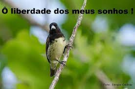
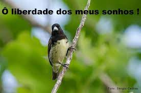

- fatos sobre passaros:
Bird Albinism: This is a genetic mutation that results in the lack of an enzyme essential to produce melanin
demonstraçao da pagina
passarinhos legais para analise
Bird Albinism: This is a genetic mutation that results in the lack of an enzyme essential to produce melanin
passarinhos legais para analise
